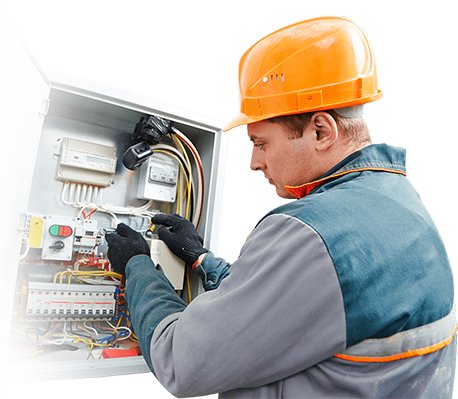

Você sabia que sua família corre sério risco de vida com uma instalação antiga ou mal feita?
É muito comum acontecer graves acidentes em residências
cuja a instalaçao elétrica é antiga ou foi mal instalada,
seja pelo morador ou um profissional.
Por incrivel que pareça, uma instalação elétrica requer
certos cuidados e uma ótima execução, para assim, ela
ser considerada ideal para uso e que tenha uma boa duração
á longo prazo.
As vantagens são imensas, como por exemplo:
1. Economizar Energia;
2. Evitar curto circuito;
3. Evitar acidentes domésticos;
4. Maior facilidade de utilização;
5. Sua família fica protegida.
Sendo assim, a partir de hoje você encontrou o profissional
ideal para realizar a manutenção ou instalação da sua
rede elétrica, evitando todos os problemas acima. Trabalho como Eletricista em Salvador e Região.
Aguardo sua ligação!

SERVIÇO, QUALIDADE E RESPONSABILIDADE.
Meu principal objetivo como um profissional Eletricista em Salvador é entregar a máxima segurança, qualidade e responsabilidade. Respeitando as normas e boas condutas. Agindo de acordo com as suas necessidades e buscando a solução dos seus problemas.
